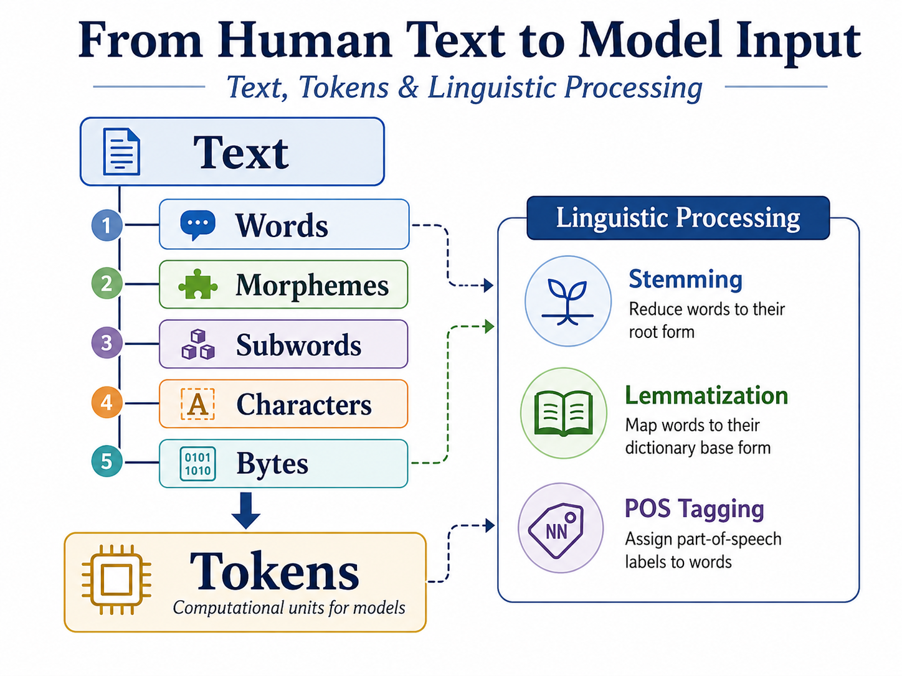

Chapter 2: Text, Tokens & Linguistic Processing#
From Human Text to Model Input
Humans experience language as words, sentences, and meaning. Computers do not. Before language can be analyzed by an NLP system or processed by a language model, text must first be represented computationally.
One of the most important steps in this transformation is tokenization: dividing text into units called tokens.
A token, however, is not necessarily a word. Depending on the system, a token may represent a whole word, part of a word, punctuation, a character, or even a byte. There is therefore no universally correct way to divide language into tokens. Tokenization is a modeling decision.
“Understanding tokenization is essential for anyone working with large language models (LLMs). It helps you control model behavior, optimize costs, and avoid hitting hard limits like the context window.”
— Berkov (2025)
Big Idea#
Language must be segmented, represented, and interpreted before it can be processed computationally.
This chapter begins with the linguistic structure of text and then examines how traditional NLP systems and modern language models transform that structure into computational units.
From text to linguistic structure#
Natural language has structure at several levels. Before asking how a computer should tokenize text, it helps to understand some of the units that humans recognize in language.
Word#
A word may seem like an obvious unit of language, particularly in English, where spaces often separate words. Computationally, however, defining a word is not always straightforward.
Note
Consider the sentence:
Don't stop!
How many words are there?
Is
Don'tone word or two?Should
!count as a separate token?
The answer depends on the task and the tokenization strategy.
We also distinguish between word instances and word types:
Word instances (\(N\)): all occurrences of words in a text.
Word types (\(|V|\)): the unique words occurring in the text. The set of word types forms a vocabulary.
Note
Example
the cat saw the dog
contains 5 word instances but only 4 word types: the, cat, saw, and dog.
Writing systems such as Chinese, Japanese, and Thai do not consistently use spaces to mark word boundaries. Tokenization therefore involves both computational and linguistic decisions.
Important
A linguistic word and a computational token are not necessarily the same thing.
Morphemes#
Words themselves can contain smaller meaningful units called morphemes. Each morpheme contributes meaning.
Note
Example
unhelpful
This word can be analyzed as:
un + help + ful
Morphemes include:
Roots: carry the central lexical meaning of a word, such as
help.Affixes: Sub-units attached to roots, divided into inflectional morphemes (like English plural -s or past tense -ed) and derivational morphemes (which alter word class or meaning, such as un- or -ly).
Clitics: Syntactically independent units that attach phonologically or orthographically to neighboring words (e.g., English ‘ve or ‘s).
Morphology matters computationally because a model must decide whether related forms such as:
walk, walks, walked, walking
should be treated as completely separate units or represented through smaller shared components.
Modern subword tokenization revisits this problem from a computational perspective, although subword tokens do not necessarily correspond to linguistic morphemes.
Characters and Encoding#
At an even smaller level, written text consists of characters. Computers represent characters using numerical encodings (such as U+0061 for a).
From Linguistic Units to Computational Units#
These levels give us several possible ways to divide language:

Fig. 7 Levels of Text Processing.#
Different NLP systems make different choices about which units should become tokens.
Traditional NLP often emphasizes linguistically meaningful word boundaries and performs additional processing such as stemming, lemmatization, and part-of-speech tagging.
Modern language models commonly rely on subword tokenization, in which frequent words may remain intact while uncommon or complex words are divided into smaller pieces.
Tokenization therefore sits at an important intersection between language and computation.
Why This Matters#
Tokenization is not simply a preprocessing trick. The way text is divided can affect what a model receives and how efficiently it processes language.
Tokenization influences:
Vocabulary: which text units the system can represent directly.
Sequence length: how many tokens are needed to represent a piece of text.
Context windows: how much information an LLM can process at once.
Computational cost: longer token sequences require more processing.
Multilingual processing: the same amount of information may require very different numbers of tokens across languages.
Linguistic analysis: token boundaries influence downstream tasks such as stemming, lemmatization, and part-of-speech tagging.
The central question throughout the chapter is simple:
How should human language be divided and represented so that a machine can work with it?
References & Further Reading#
Berkov, M. (2025). What Is LLM Tokenization and Why Is It Important? Thinking Sand, Medium.
https://medium.com/thinking-sand/what-is-llm-tokenization-and-why-is-it-important-4eb5fbefb075Jurafsky, D., & Martin, J. H. (2026). Speech and Language Processing: An Introduction to Natural Language Processing, Computational Linguistics, and Speech Recognition with Language Models (3rd ed.). See Chapter 2, Words and Tokens.
https://web.stanford.edu/~jurafsky/slp3/Sennrich, R., Haddow, B., & Birch, A. (2016). Neural Machine Translation of Rare Words with Subword Units. Proceedings of the 54th Annual Meeting of the Association for Computational Linguistics, 1715–1725.
https://aclanthology.org/P16-1162/Kudo, T. (2018). Subword Regularization: Improving Neural Network Translation Models with Multiple Subword Candidates. Proceedings of the 56th Annual Meeting of the Association for Computational Linguistics, 66–75.
https://aclanthology.org/P18-1007/Kudo, T., & Richardson, J. (2018). SentencePiece: A Simple and Language Independent Subword Tokenizer and Detokenizer for Neural Text Processing. Proceedings of the 2018 Conference on Empirical Methods in Natural Language Processing: System Demonstrations, 66–71.
https://aclanthology.org/D18-2012/Hugging Face. (n.d.). Tokenization Algorithms. Transformers Documentation.
https://huggingface.co/docs/transformers/main/tokenizer_summaryOpenAI. (2026). What Are Tokens and How to Count Them? OpenAI Help Center.
https://help.openai.com/en/articles/4936856-what-are-tokens-and-how-to-count-them